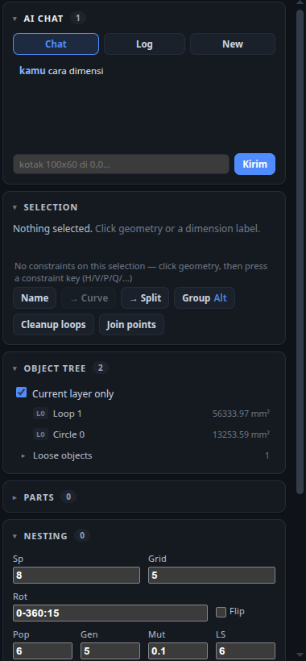
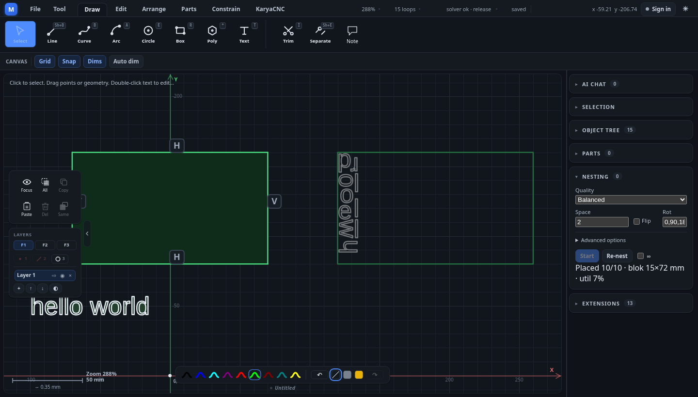

Tab Nesting
Nesting menyusun loop tertutup di atas lembar (sheet) menggunakan algoritma genetika (GA) + No-Fit Polygon (NFP), sepenuhnya di browser — tanpa server.

Balanced), Space (2 mm), Flip, Rot (0,90,180,270), bagian Advanced options (Pop, Gen, Mut, LS, Grid), tombol Start / Re-nest / ∞ (tombol Stop muncul saat proses berjalan), progress bar, dan status.
1. Pengaturan nesting
| Pengaturan | Keterangan |
|---|---|
| Quality | Preset kualitas mesin NFP/IFP: Fast (cepat untuk banyak part), Balanced (bawaan harian), Max (untuk bentuk cekung & huruf rumit), atau Custom (otomatis terpilih jika opsi lanjutan diubah manual). |
| Space | Spasi antar bagian dalam mm (default 2 mm; setiap bagian di-offset setengah nilai di setiap sisi sebelum dipaketkan). |
| Flip | Izinkan membalik bagian secara horizontal selama pemaketan. |
| Rot (Rotation) | Rotasi yang diizinkan: daftar sudut (0,90,180,270), preset jumlah arah (1,2,3,4,8), atau range 0-360:90. Sama seperti nestjs2. |
| Pop (Advanced) | Ukuran populasi algoritma genetika (GA). |
| Gen (Advanced) | Jumlah generasi GA. |
| Mut (Advanced) | Rata mutasi GA (0 = urutan orang tua dipertahankan, 1 = selalu diacak ulang). |
| LS (Advanced) | Percobaan mendaki lokal setelah GA (tukar, sisip, rotasi; 0 = mati). |
| Grid (Advanced) | Langkah cadangan grid dalam mm (hanya dipakai pada mode cadangan NFP eksak). |
2. Tombol kontrol
| Tombol | Keterangan |
|---|---|
| Start | Nest loop terpilih ke kanan lembar hijau (sheet loop). |
| Re-nest | Nest bagian yang sama lagi tanpa memilih ulang (mengganti hasil sebelumnya). |
| Stop | Berhenti dan simpan hasil terbaik saat ini. |
| ∞ (Infinite) | Terus re-nest dengan benih GA segar sampai Stop; hanya tata letak terbaik yang diterapkan. |
Semua proses berjalan di browser (worker). Untuk file besar, jendela bisa membeku beberapa saat saat dibangun. Nyalakan "keep each group as one object" di impor untuk membuatnya jauh lebih ringan.
3. Cara kerja untuk pemula (contoh teks “hello world”)
- Siapkan part yang akan disusun: misalnya buat teks (T) bertuliskan
hello worldlalu klik → Curve agar setiap huruf menjadi loop potong terpisah (atau tetap sebagai objek teks utuh jika ingin diukir dalam satu kesatuan). - Gambar lembar bahan (sheet): tekan Esc terlebih dahulu agar objek tidak terpilih (supaya warna teks tidak ikut berubah), lalu klik swatch Hijau / Mark (
#00ff00) dan gambar kotak lembar dengan alat Box (R). - Pilih lembar + semua part: tekan Ctrl+A atau blok kotak hijau bersama semua loop huruf/part yang ingin disusun. (Tips: tekan Ctrl+Shift+L — Clone as nest parts pada seleksi apa pun untuk memecahnya menjadi kurva per objek induk, mis. tiap huruf teks menjadi 1 objek Array siap nesting manual.)
- Buka panel Nesting di sidebar kanan, pilih preset Quality (atau atur Space dan Rot), lalu klik Start. Hasil tata letak ditempatkan sebagai live clone di sebelah kanan lembar hijau asli.
- Gunakan Re-nest untuk mencoba variasi susunan baru, atau lanjutkan penyempurnaan posisi secara manual memakai Drag wall (W).

hello world yang dikonversi ke kurva (kiri bawah) disusun otomatis ke dalam lembar hijau 140×80 mm (Placed 10/10 · blok 15×72 mm · util 7%) dengan rotasi otomatis 0°/90°/180°/270°.Perbaiki hasil nesting secara manual: setelah nesting selesai, tekan Esc untuk melepas seleksi grup, aktifkan tab Arrange → Drag wall (W), lalu geser huruf/part satu per satu di dalam lembar hijau. Dinding offset akan menjaga jarak aman dan mencegah tabrakan antar huruf maupun tepi lembar.
Nesting Panel
Nesting automatically packs closed loops onto a material sheet using a Genetic Algorithm (GA) + No-Fit Polygon (NFP) engine running 100% locally in a browser worker.
Balanced), Space (2 mm), Flip, Rot (0,90,180,270), expandable Advanced options (Pop, Gen, Mut, LS, Grid), Start / Re-nest / ∞ buttons (Stop appears while running), progress bar, and status line.1. Nesting settings
| Setting | Description |
|---|---|
| Quality | True NFP/IFP preset: Fast for large part counts, Balanced for daily use, Max for concave shapes & complex glyphs, or Custom when tweaking advanced GA values manually. |
| Space | Clearance gap between parts in mm (default 2 mm; each contour is offset by half this value on every side before packing). |
| Flip | Allow mirroring parts horizontally while searching for tighter fits. |
| Rot (Rotation) | Allowed part rotations: explicit angle list (0,90,180,270), preset count (1,2,3,4,8), or range 0-360:90. |
| Pop (Advanced) | Genetic algorithm population size per generation. |
| Gen (Advanced) | Number of GA evolution generations per run. |
| Mut (Advanced) | GA mutation rate (0 keeps parent order, 1 reshuffles completely). |
| LS (Advanced) | Post-GA local-search hill-climbing refinement trials (swap, insertion, rotation; 0 = off). |
| Grid (Advanced) | Fallback grid step in mm (used only in exact NFP fallback mode). |
2. Control buttons
| Button | Description |
|---|---|
| Start | Nest selected parts onto the right side of the selected green sheet loop. |
| Re-nest | Run a new pass on the same selection and replace the previous layout. |
| Stop | Stop the worker and keep the best layout found so far. |
| ∞ (Infinite) | Continuously re-nest with fresh GA seeds until stopped, applying only improvements. |
Runs locally in a browser worker. For dense vector imports, keeping "keep each group as one object" enabled drastically speeds up NFP computation.
3. Beginner walkthrough (“hello world” example)
- Prepare parts: create text (T) such as
hello worldand click → Curve so each letter becomes a separate cut loop. - Draw a sheet boundary: press Esc to clear selection, pick the Green / Mark color swatch (
#00ff00), and draw a sheet rectangle with Box (R). - Select sheet + parts: press Ctrl+A or box-select the green sheet together with every letter/part loop. (Tip: press Ctrl+Shift+L — Clone as nest parts on any selection to convert each parent object into curves and group it as a separate nestable Array clone.)
- Open the Nesting panel in the right sidebar, choose a Quality preset (or tune Space and Rot), and click Start. Packed results appear as live clones to the right of the green sheet.
- Click Re-nest to test alternate layouts, or tweak individual pieces manually with Drag wall (W).
hello world letters packed automatically into a 140×80 mm green sheet (Placed 10/10 · blok 15×72 mm · util 7%) with 0°/90°/180°/270° rotation.Manual fine-tuning: after nesting finishes, press Esc to clear the group selection, activate Arrange → Drag wall (W), and slide parts individually inside the green sheet — the collision wall keeps clearance gaps safe.